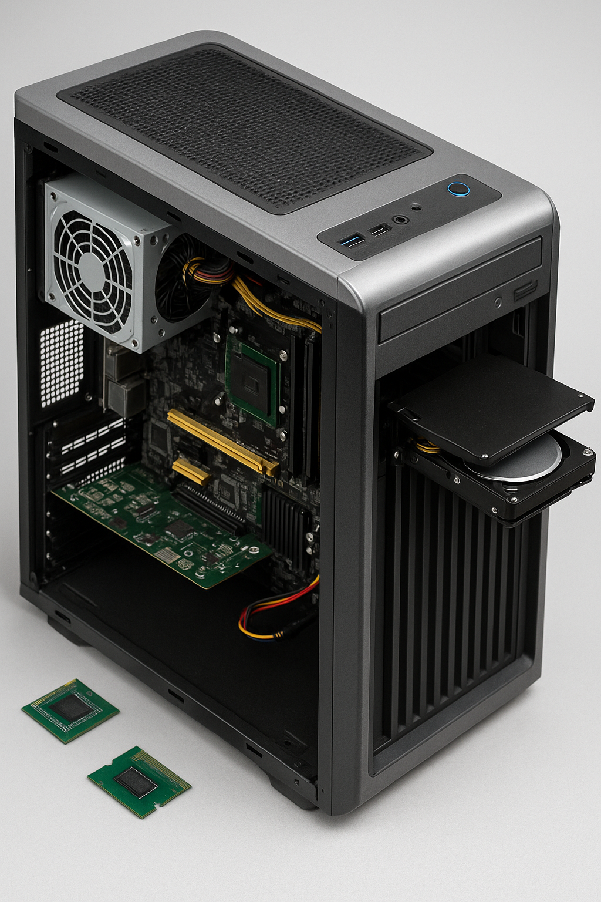

Click on each component to view the specification.
Select the appropriate cause and resolution for the issue.
If at any time you would like to bring back the initial state of the simulation, please click the Reset All button.
